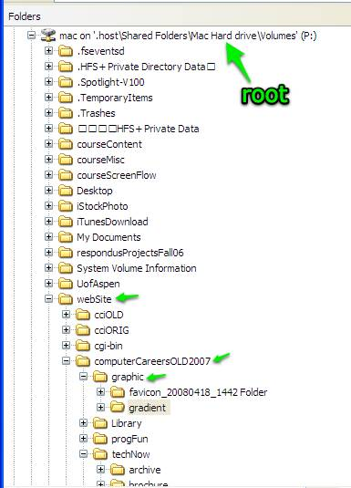

Starting the path with a /
Notice how both of those path statements start with the the word graphic. If you put a slash "/" at the beginning you are telling the system to start from the root directory. In this example that would take you to the base of the current drive and each of the subfolders would have to be included (marked with small green arrows)

Here's what the path would look like if you start it with a slash:
/webSite/computerCareersOLD2007/graphic/myFile.jpg
Unless you specifically need to start from the root of the drive, don't start out the path statement with a slash "/"